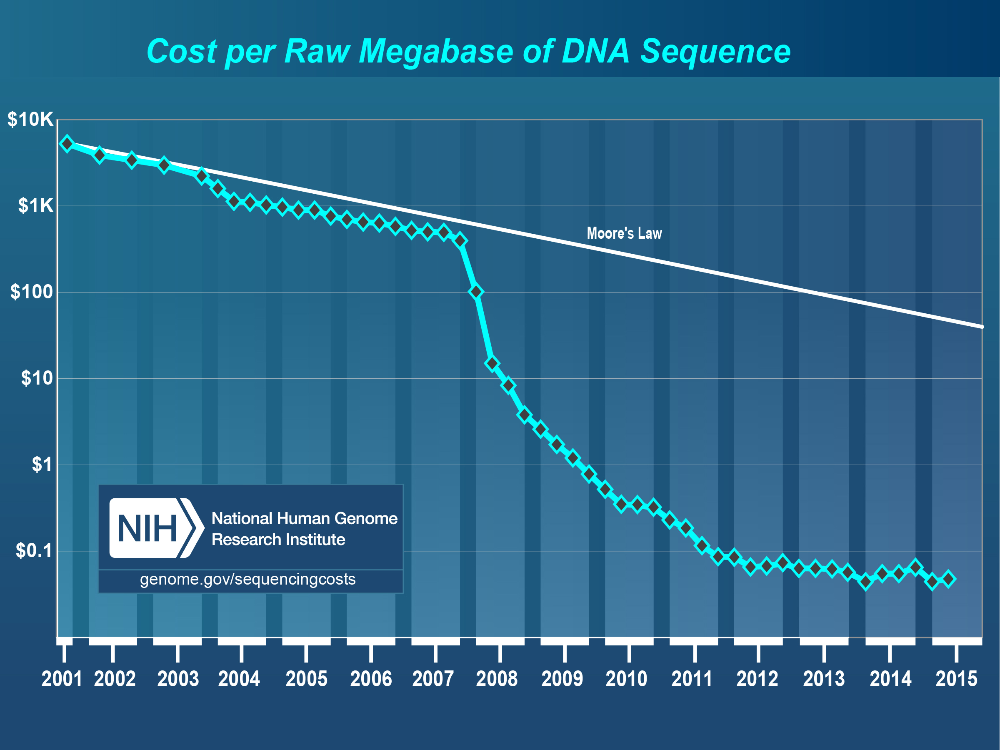

Early this year I started looking for a conference that would best support my learning about IoT - not a startup gadget meetup nor a corporate-driven trade fair, but an event with a good mix of speakers representing small and big companies, researchers, as well as both software and hardware. I found no such events in Europe, so I signed up for the second O’Reilly Solid in San Francisco. Funnily enough, soon after signing up they published the first Solidcon Europe, which will take place in Amsterdam this October.
I was looking to deepen my IoT knowledge, but I was still surprised by some of the wider meanings Internet of Things has taken on. For example, I did not expect to hear so much about biology at an IoT conference! Here is a short recap of my visit.
Biology is the new digital
We are seeing IoT knocking down barriers between software and the physical. Solidcon and MIT Media Lab propose that next up will be barriers between software and the living world. The cost of DNA sequencing followed Moore’s law until 2007. Since then, it has been radically outpaced and the price of sequencing an average humane genome has plummeted from $10M to a few thousand dollars in just six years.
source: http://www.genome.gov/sequencingcosts/
 How is this related to IoT and software? In addition to programming computers and sensors, it's possible to program and print DNA into living cells – and eventually you’ll be able to do it in your kitchen. For example, bioengineering startup Revolution Bio's presentation talked about how they are able to genetically change the colour of a flower. Obviously, this is a nice trick, but the life changing applications will be seen in e.g. healthcare and cleantech: individually tailored pharmaceuticals, micro-organisms that help with environmental cleanup or micro-organisms that produce fuel.
How is this related to IoT and software? In addition to programming computers and sensors, it's possible to program and print DNA into living cells – and eventually you’ll be able to do it in your kitchen. For example, bioengineering startup Revolution Bio's presentation talked about how they are able to genetically change the colour of a flower. Obviously, this is a nice trick, but the life changing applications will be seen in e.g. healthcare and cleantech: individually tailored pharmaceuticals, micro-organisms that help with environmental cleanup or micro-organisms that produce fuel.

From Gadgets to Industrial applications
 Primarily, I was hoping to hear about new industrial innovation based on the use of IoT, but as it turned out, many of the applications seen in the conference were still centered on consumer gadgets. For example, Alike.io created – and demonstrated their product development and manufacturing processes live at the conference – a wristband that allows event participants to see if their interests match, based on their pre-filled online profile.
Primarily, I was hoping to hear about new industrial innovation based on the use of IoT, but as it turned out, many of the applications seen in the conference were still centered on consumer gadgets. For example, Alike.io created – and demonstrated their product development and manufacturing processes live at the conference – a wristband that allows event participants to see if their interests match, based on their pre-filled online profile.

Other case studies and workshops covered how to manage production in Shenzhen, how to design UX for products combining hardware + software (Fjord was actually presenting about Zero UI, the screen-less future), etc. It was all very interesting, but I was still missing the practical industry applications. Divergent Microfactories presented an interesting example that sells an automotive manufacturing system based on 3D printing. Their claim is that, from an enviromental point-of-view, the actual production process is way more important than the uused fuel type, which is where the current focus is.
Michael Chui (@mchui), partner at McKinsey Global Institute, presented their fresh report Unlocking the potential of the Internet of Things. The MGI study proposes that the biggest value of IoT will be seen in industrial applications, where factories represent by far the biggest potential.
“While consumer applications such as fitness monitors and self-driving cars attract the most attention and can create significant value, we estimate that B2B uses can generate nearly 70 percent of potential value enabled by IoT.”

They found out that less than 1% of industrial IoT data is currently being used in decision-making or for improving efficiency. The main technical obstacle preventing full utilization is lack of interoperability among IoT systems. You can download the full MGI report here.
To sum up, Solidcon is an excellent event for meeting very interesting people, getting inspired and a good overview of IoT and related future trends from the world's leading researchers. I am still looking for an event for learning about industrial IoT innovation. When I talked to General Electrics they were obviously promoting their Minds + Machines conference end of September. Too bad it's not in Europe.
Cheers,
Sampo